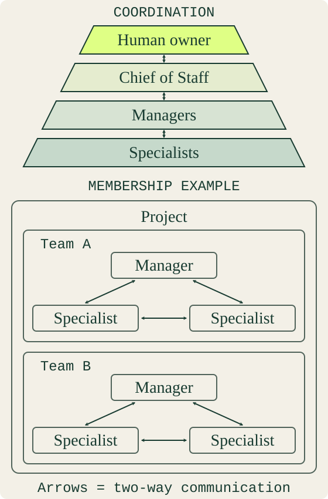

YOUR PROJECT. A SMALL, PERSISTENT TEAM.
Give your next idea
a team of its own.
Reusable agent profiles for Codex Desktop. Start with a Manager and one specialist, or choose a team built around the work you need to do.
23agent templates
12core teams
+ StarterManager + specialist
A role with a boundary.
Profiles define responsibilities, tools and approval limits. A role name does not guarantee model capability or tool access.
Memory stays with the project.
Each installed agent gets its own profile and empty project-local learned memory. Public templates contain no private history.
Work you can follow.
Choose GitHub, local records, or both. Combined tracking has one status authority. Managers coordinate; specialists deliver evidence.
HOW THE WORK CONNECTS
One owner. Clear coordination.

CHOOSE AN OUTCOME
Small teams. Useful work.
Three to five core roles, with extra specialists added when the task needs them. The Starter keeps the first step smaller.
ONE ROLE OR A WHOLE TEAM
Meet the catalog.
Team Manager handles coordination. Product Manager handles product decisions. Project Director connects multiple teams. Chief of Staff is a separate personal-assistant package.
Manager · Developer · Verifier · Director · Custom role builder
Code Reviewer · Designer · Strategist · Content Writer · Content Reviewer
Lead Researcher · Outreach Writer · Pipeline Analyst · Business Analyst · Research Analyst
Product Manager · Data Analyst · Operations Specialist · Knowledge Writer
Support Specialist · Learning Designer · Career Advisor · Financial Analyst
FROM CATALOG TO PROJECT
Make the first step concrete.
- Read the setup guide. Use Codex Desktop, Python and the repository tools. GitHub CLI is needed for GitHub tracking and remote catalog fetches.
- Choose a team and tracking. Review the plan, role boundaries and GitHub/local/both selection before installation.
- Appoint and verify. Load each installed profile, check its own memory and chat identity, then run a bounded task.
Codex Office is a local interface for team rooms and linked personal chats. This website hosts the catalog and documentation. New profiles include synthetic exercises; live Desktop acceptance remains a separate check.
THE CATALOG IS OPEN
Bring a role worth reusing.
Request a missing profile, contribute a concrete example, or improve an existing contract. Contributions need clear boundaries, acceptance exercises and MIT-compatible provenance. Updates preserve installed identities and private memory.